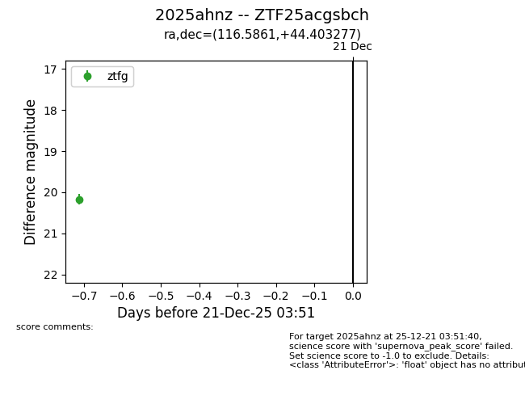
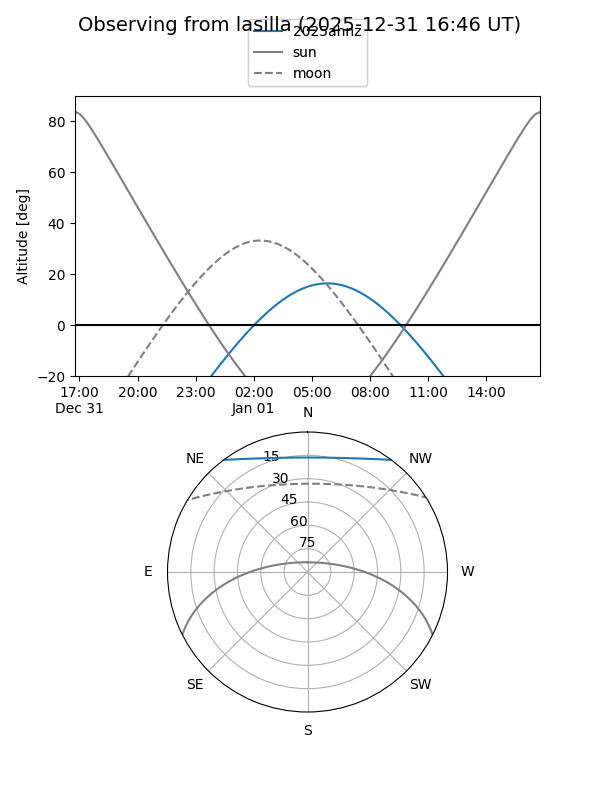
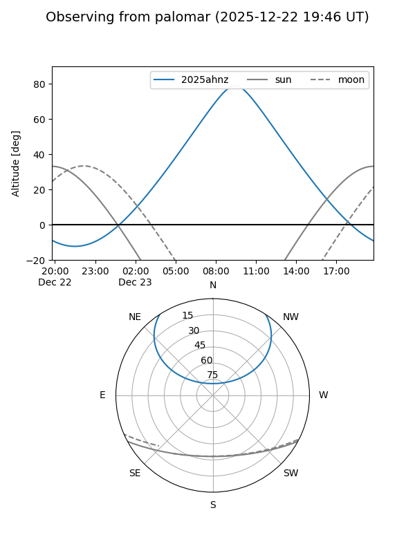
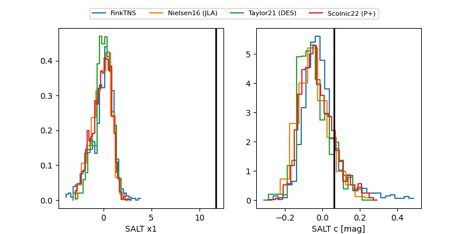

2025ahnz
Target 2025ahnz at 2025-12-31 18:00
Aliases and brokers:
FINK: link
Lasair: link
ALeRCE: link
TNS: link
YSE: link
alt names
ZTF25acgsbch (ztf,fink_ztf)
2025ahnz (tns,yse)
ATLAS25qbj (atlas)
Coordinates:
equatorial (ra, dec) = 116.5861,+44.40328
equatorial (HMS+DMS) = 07:46:20.65,+44:24:11.80
galactic (l, b) = (174.7686,+28.02979)
Flags:
Photometry:
last ztfg=20.13
2 ztfg detections
Lightcurve

Visibility


Additional plots
